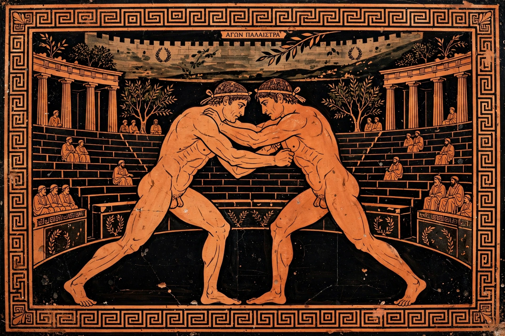

Pankration

Pankration (Greek: παγκράτιον, "all of might") was a submission wrestling and striking contest introduced into the ancient Olympic Games in 648 BC. It combined boxing (pygmachia) and wrestling (pale) with kicks, joint locks, strangleholds and takedowns, making it the closest ancient analogue of modern mixed martial arts.
Rules and techniques
Almost everything was permitted: the only recognised fouls were biting and gouging the eyes. Victory came when an opponent submitted — by raising a finger — or was incapacitated; bouts had no rounds or weight classes and could end in death, as famously happened when Arrhichion was crowned posthumously after breaking his opponent's ankle while being strangled. Fighters competed naked and oiled, beginning upright; once a man was down, ground fighting continued.
Famous athletes
Legends of the sport include Arrhichion of Phigalia, Dioxippus of Athens, Polydamas of Skotoussa and Theogenes of Thasos. Pankration was also part of military training, most associated with Sparta — though the Spartans, ironically, abstained from the Olympic event because submission conflicted with their code.
Legacy
The event disappeared with the ancient Games in late antiquity. A modern amateur sport under the same name, governed by World Pankration Athlima Federation bodies affiliated with United World Wrestling, was revived in the late 20th century with safety rules, though it has not been added to the modern Olympics.
See also: Ancient Olympic Games, Greek wrestling, Mixed martial arts.